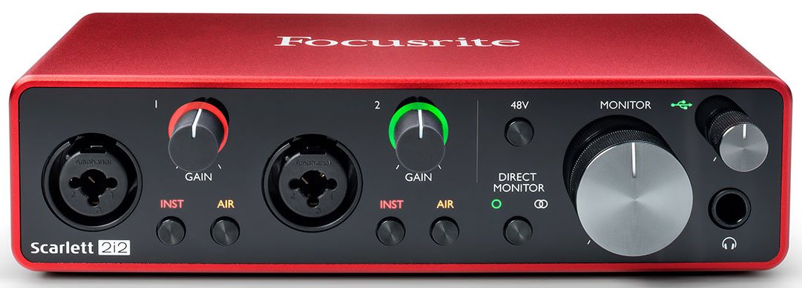
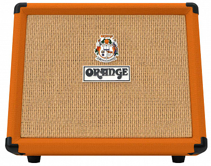
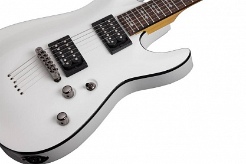

Время работы: с 9:00 до 20:00. Номер телефона: +7(983)-308-02-38.
Внешняя звуковая карта FOCUSRITE Scarlett 2i2 3nd Gen

Внешняя звуковая карта FOCUSRITE Scarlett 2i2 3nd Gen — высокопроизводительное и функциональное решение для использования дома или на небольшой студии. В основе данной модели используется ЦАП с разрядностью 24 бит и максимальной частотой до 192 кГц, что обеспечивает качественное звучание без помех и с низкой задержкой сигнала. Также данная модель оснащена 2 усилителями мощностью до 56 дБ, поддерживающими технологию Air, которая эмулирует звучание легендарных ISA-предусилителей производителя.
Цена: 23099 ₽
Комбо ORANGE Crush Acoustic 30

Основываясь на 50-ти летнем опыте в области создания превосходно звучащих гитарных усилителей компания Orange выпустила комбоусилитель Crush Acoustic 30 для подзвучки акустической гитары. Продолжая свои традиции, данная модель характеризуется легким весом, портативностью, универсальным наклонным корпусом, выходной мощностью в 30 Вт, и предлагает возможность выбора питания либо от батарей, либо от DC адаптера. Комбо Crush Acoustic 30 имеет два канала, встроенные эффекты Reverb и Chorus (на обоих каналах) и нотч фильтр для эффективного подавления обратной связи, позволяя вам сосредоточиться на своем исполнении.
Цена: 63541 ₽
Электрогитара Schecter Omen-6 vwht

Страна производитель: Индонезия
Мензура: 25.5” (648 мм)
Бриджевый звукосниматель: Schecter Diamond Plus
Нековый звукосниматель: Schecter Diamond Plus
Цена: 23099 ₽